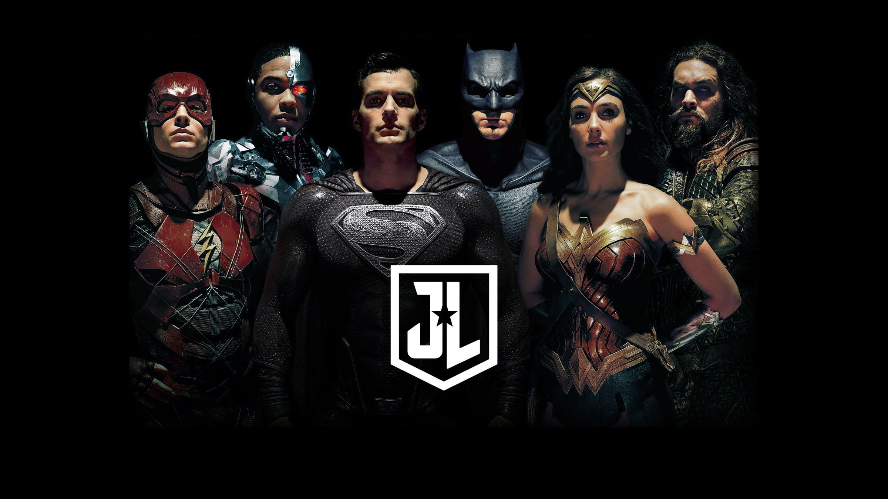

Main Allies
Robin
The title of Robin has been held by several characters, most notably Dick Grayson, Jason Todd, Tim Drake, and Damian Wayne. Each Robin brings unique skills and perspectives to Batman's mission.
- Dick Grayson: The first Robin, who later becomes Nightwing, known for his acrobatics and leadership.
- Jason Todd: The second Robin, known for his more aggressive style and tragic fate.
- Tim Drake: The third Robin, a brilliant detective who deduces Batman's identity.
- Damian Wayne: Batman's biological son, trained by the League of Assassins, with a strong sense of justice.
Alfred Pennyworth
Alfred is Batman's trusted butler and father figure. He provides emotional support, medical assistance, and tactical advice. His unwavering loyalty and wisdom make him an indispensable ally.
Commissioner Gordon
As the head of Gotham City Police Department, Commissioner Gordon is one of Batman's most vital allies in the fight against crime. He often collaborates with Batman to take down major threats, serving as a bridge between the police and the vigilante.
Oracle/Baraba Gordon
After a tragic encounter with the Joker, Barbara Gordon transforms from Batgirl to Oracle, utilizing her exceptional computer skills to assist Batman and other heroes. She provides intelligence, surveillance, and tech support from her headquarters.
Justice League
Batman is a founding member of the Justice League, a coalition of superheroes that includes Superman, Wonder Woman, The Flash, Aquaman, and others. This team allows him to tackle threats that are beyond the scope of Gotham alone.
